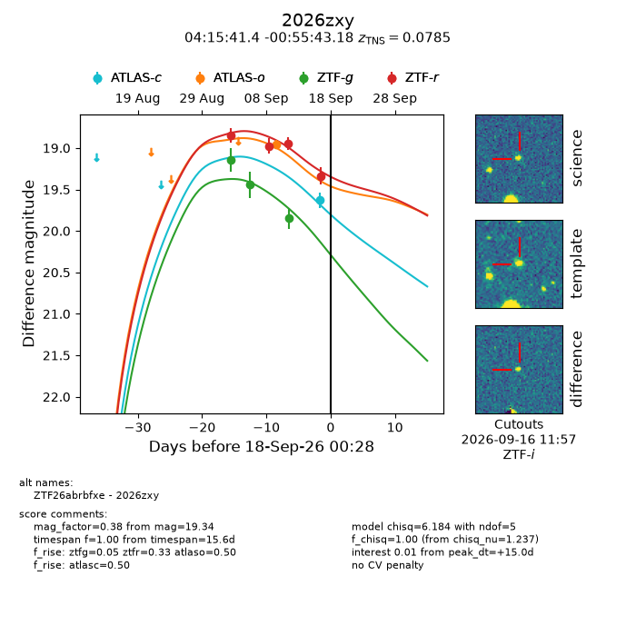
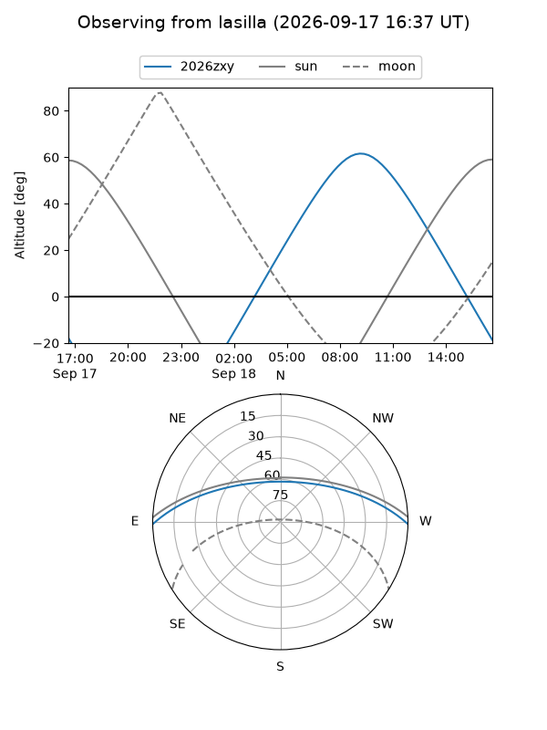
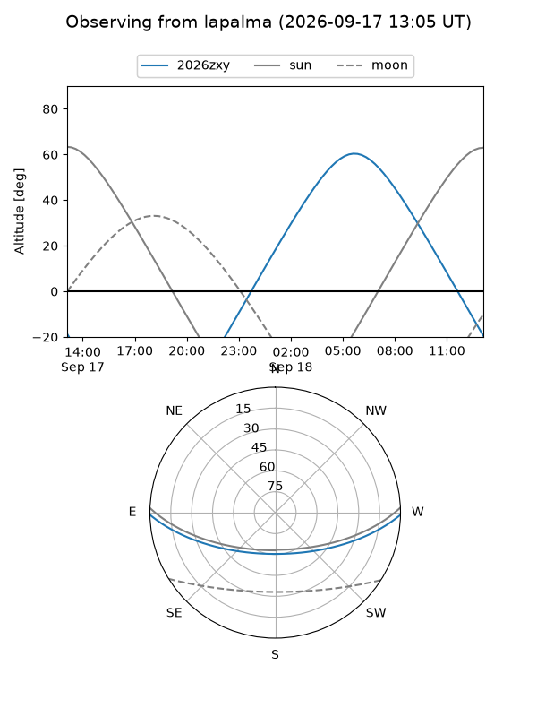
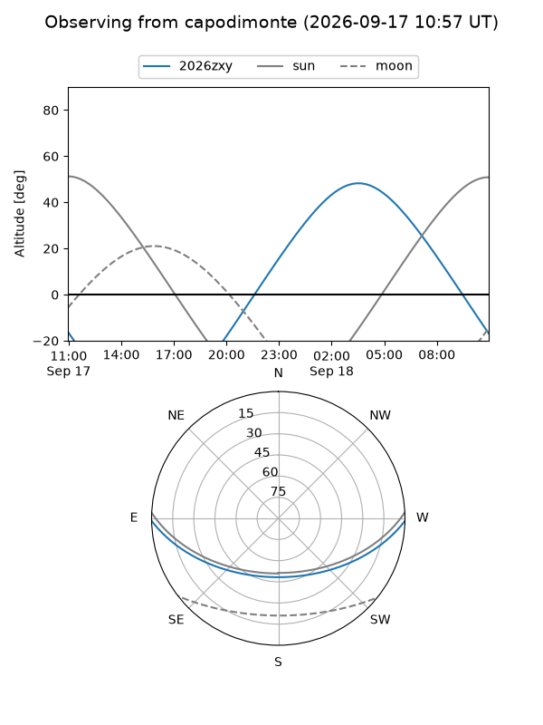
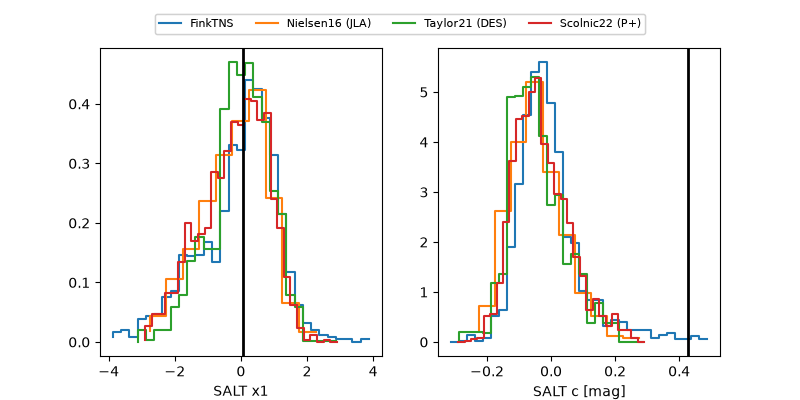

2026zxy
Target 2026zxy at 2026-09-18 00:30
Aliases and brokers:
FINK-ZTF: ztf.fink-portal.org/ZTF26abrbfxe
Lasair-ZTF: lasair-ztf.lsst.ac.uk/objects/ZTF26abrbfxe
ALeRCE-ZTF: alerce.online/object/ZTF26abrbfxe
YSE-PZ: ziggy.ucolick.org/yse/transient_detail/2026zxy
TNS name: wis-tns.org/object/2026zxy
Direct TNS query: direct search
alt names
ZTF26abrbfxe (ztf,fink_ztf)
2026zxy (tns,yse)
Coordinates:
equatorial (ra, dec) = 63.9225,-0.92866
equatorial (HMS+DMS) = 04:15:41.41,-00:55:43.18
galactic (l, b) = (193.6484,-34.51646)
Flags:
TNS type: SN IIb
TNS redshift: 0.0785
peak dt: +15.0
Photometry:
last atlasc=19.63, atlaso=18.96, ztfg=19.85, ztfr=19.34
1 atlasc, 1 atlaso, 3 ztfg, 4 ztfr detections
Lightcurve

Visibility



Additional plots
